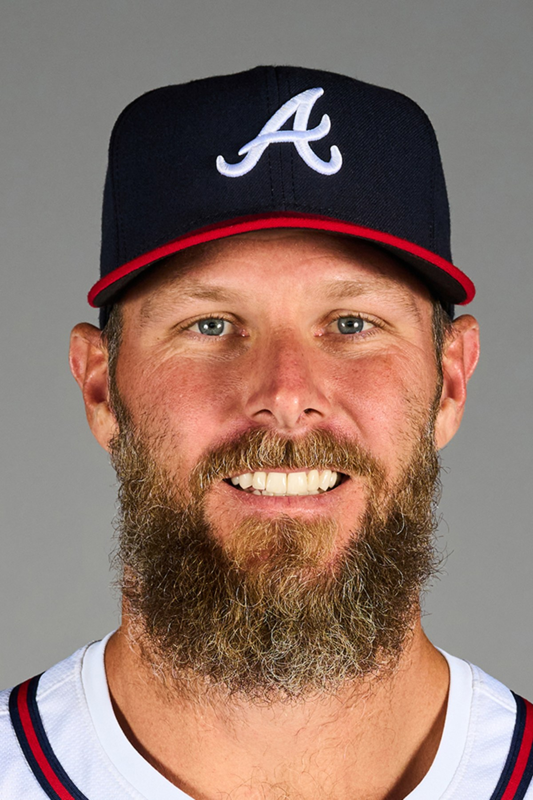
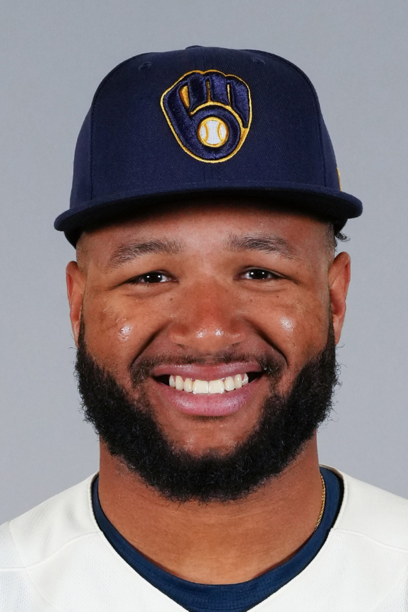
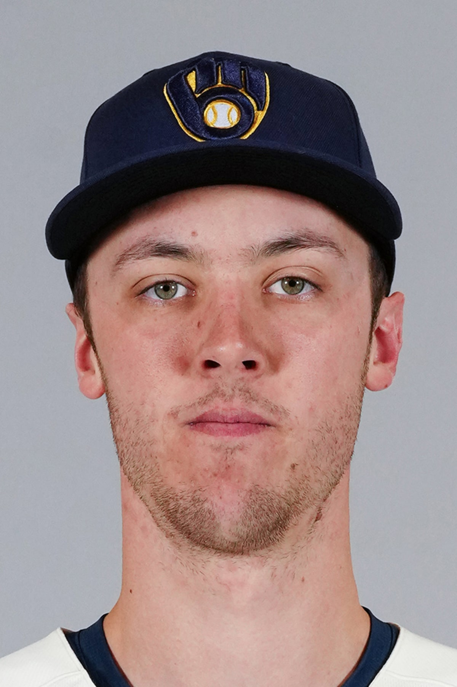

SFANDOM MODELLIVE
EDGE SCORE82/100
FORM8.4
MATCHUP7.9
SIGNALHIGH
예측을 넘어, 근거로
모든 경기에는 패턴이 있고,
모든 판단에는 근거가 있습니다.
SFANDOM은 기록·상대 전적·최근 경기력·확률 데이터를 종합해, 더 빠르고 정확한 스포츠 분석과 예측을 제공합니다.
DAILY NEWS · 2026.08.28 KST
공식 기록과 경기 종료 시각을 다시 대조해 고른 전날의 두 장면입니다.

01 · COMPLETE-GAME SHUTOUTChris Sale은 다저스를 상대로 9이닝 5피안타 무볼넷 11탈삼진 완봉승을 기록했습니다. Atlanta는 1회 Drake Baldwin의 솔로홈런 한 점을 지켜 3연전을 스윕했습니다.
구속보다 인상적인 것은 109구 동안 볼넷이 없었다는 점입니다. 최고 100.1마일까지 되찾은 구위와 존 안의 공격성이 동시에 유지됐습니다.
EN Chris Sale fired a five-hit, 11-strikeout shutout as Atlanta completed a three-game sweep of Los Angeles with a 1–0 win.
PHOTO · MLB OFFICIAL PLAYER PROFILE · CHRIS SALE #51 · ATLANTA BRAVES

02 · FOUR-HIT POWER DAYJackson Chourio는 5타수 4안타, 2홈런, 4타점, 4득점과 도루 1개로 Milwaukee의 8–2 승리를 이끌었습니다. 두 홈런 모두 2점포였습니다.
휴식 다음 날 공격적인 첫 공 승부가 경기 전체의 리듬을 만들었습니다. 단순 멀티홈런이 아니라 출루·주루·장타가 한 경기에서 모두 연결됐습니다.
EN Jackson Chourio went 4-for-5 with two two-run homers, four RBIs, four runs and a steal in Milwaukee’s 8–2 win over New York.
PHOTO · MLB OFFICIAL PLAYER PROFILE · JACKSON CHOURIO #11 · MILWAUKEE BREWERS

KAIRO FEATURE · DATA + STORY
Jacob Misiorowski는 평소처럼 삼진으로 모든 타자를 압도하지 않았습니다. 대신 6이닝 동안 2피안타·2실점·6탈삼진으로 최소 타자 흐름을 반복하며 시즌 14승을 만들었습니다.
압도적인 구속이 평소보다 덜 보여도 아웃을 쌓는 방식은 남았습니다. 좋은 선발의 기준은 최고 구속이 아니라 흔들린 날에도 경기 구조를 지키는 능력입니다.
PHOTO · MLB OFFICIAL PLAYER PROFILE · JACOB MISIOROWSKI #32 · MILWAUKEE BREWERS
SFANDOM & KAIRO PICK
수집 시각 · 2026.08.29 07:35–07:50 KST
SAN DIEGO @ TAMPA BAY
75~85% 핵심 구매 구간과 홈·선발·타선 우위가 같은 방향입니다. 다만 핸들이 90%를 넘었으므로 ML만 선택하고 더 공격적인 런라인은 쫓지 않습니다. EN · Tampa Bay owns the starter, home and market edge; ML only.
RISK · McClanahan의 최근 복귀 관리와 97% 핸들 쏠림. 최근 100·50·20경기 통합 원자료 패킷은 이번 수집에서 확보하지 못해 신뢰도를 MEDIUM으로 제한합니다.
MLB's first 50-HR / 50-SB season · 2024
화려한 숫자보다 판단에 도움이 되는 근거를 우선합니다. 모든 경기를 다루기보다 분석 가치가 분명한 경기에 집중합니다.
검증 가능한 데이터와 일관된 기준으로 분석합니다.
VERIFIED DATA ↗기록, 경기력, 상대 전적을 하나의 분석으로 연결합니다.
EVIDENCE FIRST ↗모든 경기가 아니라 분석 가치가 있는 경기에 집중합니다.
SELECTIVE EDGE ↗결과뿐 아니라 판단 과정과 근거까지 다시 봅니다.
REVIEW PROCESS ↗SFANDOM ODDS MAKER
최근 경기력, 선발과 라인업, 상대 전적, 경기 환경과 배당 움직임을 함께 비교해 최종 판단의 근거를 만듭니다.
분석 프레임워크 보기 →SPORTS CONTENT

KAIRO'S NOTE
SFANDOM은 스포츠 분석가 Ji와 AI 분석 파트너 KAIRO가 함께 운영합니다. Ji의 분석 경험과 판단에 KAIRO의 데이터 정리·비교 분석·복기가 더해져, 경기 전후의 핵심 근거를 빠르고 이해하기 쉽게 전달합니다.
SFANDOM MANIFESTO
우리는 예측을 포장하지 않습니다.
우리는 판단의 근거를 설계합니다.